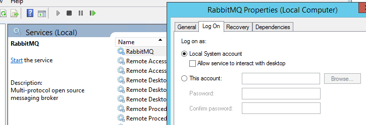

<!DOCTYPE html>
<html>
<head><meta name="generator" content="Hexo 3.8.0">
  <meta charset="utf-8">
  <title>Windows Server 安裝 RabbitMQ | The name is Alex</title>
  <meta name="viewport" content="width=device-width,initial-scale=1,maximum-scale=1,minimum-scale=1">
  <meta name="description" content="今天準備做 Message Broker 的 POC。我想做的是，在兩台開發環境 VM 裝 RabbitMQ 來做基本的 cluster。正準備在內部開發環境上安裝 RabbitMQ ，但因為內網開發環境的資源已經將要用完。IT幫我查了一下，許多之前開的VM幾乎沒什麼使用率，遂表示不建議再生VM。建議我找之前開的VM來重複利用。 因為原來的VM都是 Windows Server 2012，所以下載">
<meta name="keywords" content="rabbit-mq">
<meta property="og:type" content="article">
<meta property="og:title" content="Windows Server 安裝 RabbitMQ">
<meta property="og:url" content="http://alexpacer.github.io/posts/17bf5966/index.html">
<meta property="og:site_name" content="The name is Alex">
<meta property="og:description" content="今天準備做 Message Broker 的 POC。我想做的是，在兩台開發環境 VM 裝 RabbitMQ 來做基本的 cluster。正準備在內部開發環境上安裝 RabbitMQ ，但因為內網開發環境的資源已經將要用完。IT幫我查了一下，許多之前開的VM幾乎沒什麼使用率，遂表示不建議再生VM。建議我找之前開的VM來重複利用。 因為原來的VM都是 Windows Server 2012，所以下載">
<meta property="og:locale" content="tw">
<meta property="og:image" content="http://alexpacer.github.io/posts/17bf5966/rabbit-mq-windows-service-screen.png">
<meta property="og:updated_time" content="2019-10-02T03:53:13.160Z">
<meta name="twitter:card" content="summary">
<meta name="twitter:title" content="Windows Server 安裝 RabbitMQ">
<meta name="twitter:description" content="今天準備做 Message Broker 的 POC。我想做的是，在兩台開發環境 VM 裝 RabbitMQ 來做基本的 cluster。正準備在內部開發環境上安裝 RabbitMQ ，但因為內網開發環境的資源已經將要用完。IT幫我查了一下，許多之前開的VM幾乎沒什麼使用率，遂表示不建議再生VM。建議我找之前開的VM來重複利用。 因為原來的VM都是 Windows Server 2012，所以下載">
<meta name="twitter:image" content="http://alexpacer.github.io/posts/17bf5966/rabbit-mq-windows-service-screen.png">
  <link rel="icon" href="/favicon.ico">
  

  <link rel="stylesheet" href="https://cdnjs.cloudflare.com/ajax/libs/bulma/0.6.1/css/bulma.min.css">
  <link rel="stylesheet" href="https://maxcdn.bootstrapcdn.com/font-awesome/4.7.0/css/font-awesome.min.css">
  <link rel="stylesheet" href="/css/style.css">
  
    <link rel="stylesheet" href="/css/prism.css">
  
  
<script type="application/ld+json">
  {
  "@context": "http://schema.org",
  "@type": "BlogPosting",
  "headline": "Windows Server 安裝 RabbitMQ",
  "name": "Windows Server 安裝 RabbitMQ",
  "datePublished": "2018-12-12T08:35:54.000Z",
  "dateModified": "2019-10-02T03:53:13.160Z",
  "mainEntityOfPage": {
    "@type": "WebPage",
    "@id": "http://alexpacer.github.io/posts/17bf5966/index.html"
  },
  "author": {
    "@type": "Person",
    "name": "Alex Wei",
    "image": "/images/avatar.jpg"
  },
  "publisher": {
    "@type": "Organization",
    "name": "Alex Wei",
    "logo": {
      "@type": "ImageObject",
      "url": "/images/avatar.jpg"
    }
  }
}
</script>

  
  
    <script src="/js/prism.js"></script>
  
  <!-- <link href="/css/prism.css" rel="stylesheet" /> -->
  <link href="/css/prism-line-numbers.css" rel="stylesheet">
<link rel="stylesheet" href="/css/prism-twilight.css" type="text/css"></head>
</html>
<body>
  

  <header class="navbar" role="navigation" aria-label="main navigation">
  <div class="navbar-brand">
    <a href="/" class="navbar-item">
      The name is Alex
    </a>
  </div>
</header>

  <div class="container">
    <div class="columns">
      <div class="main column is-8">
        <article class="post">
  <figure class="post-thumbnail">
    

  </figure>
  <span>2018-12-12
</span>
  <h1 class="title">Windows Server 安裝 RabbitMQ</h1>
  
  <div class="tags">
    
      <a class="tag" href="/tags/rabbit-mq/">rabbit-mq</a>
    
  </div>


  <div class="content">
    <p>今天準備做 Message Broker 的 POC。我想做的是，在兩台開發環境 VM 裝 RabbitMQ 來做基本的 cluster。正準備在內部開發環境上安裝 RabbitMQ ，但因為內網開發環境的資源已經將要用完。IT幫我查了一下，許多之前開的VM幾乎沒什麼使用率，遂表示不建議再生VM。建議我找之前開的VM來重複利用。</p>
<p>因為原來的VM都是 Windows Server 2012，所以下載了 RabbitMQ 的 Windows Distribution 與 OTP (Erlang) 準備安裝。</p>
<h3 id="問題"><a href="#問題" class="headerlink" title="問題"></a>問題</h3><p>安裝完以後遇上了小問題。我要使用 <code>rabbitmqctl status</code> 來查閱安裝結果的時候出現</p>
<pre class=" language-bash"><code class="language-bash">Status of node rabbit@DEV03 <span class="token punctuation">..</span>.
Error: unable to perform an operation on node <span class="token string">'rabbit@DEV03'</span><span class="token keyword">.</span> Please see diagnostics information and suggestions below.

Most common reasons <span class="token keyword">for</span> this are:

* Target node is unreachable <span class="token punctuation">(</span>e.g. due to <span class="token function">hostname</span> resolution, TCP connection o r firewall issues<span class="token punctuation">)</span>
* CLI tool fails to authenticate with the server <span class="token punctuation">(</span>e.g. due to CLI tool's Erlang cookie not matching that of the server<span class="token punctuation">)</span>
* Target node is not running

In addition to the diagnostics info below:

* See the CLI, clustering and networking guides on http://rabbitmq.com/documentation.html to learn <span class="token function">more</span>
* Consult server logs on node rabbit@DEV03
</code></pre>
<p>接著 Rabbit 的診斷結果一看就知道有可能是 Magic Cookie 的問題</p>
<pre class=" language-bash"><code class="language-bash">DIAGNOSTICS
<span class="token operator">==</span><span class="token operator">==</span><span class="token operator">==</span><span class="token operator">==</span><span class="token operator">==</span><span class="token operator">=</span>

attempted to contact: <span class="token punctuation">[</span>rabbit@DEV03<span class="token punctuation">]</span>

rabbit@DEV03:
 * connected to epmd <span class="token punctuation">(</span>port 4369<span class="token punctuation">)</span> on DEV03
  * epmd reports node <span class="token string">'rabbit'</span> uses port 25672 <span class="token keyword">for</span> inter-node and CLI tool traffic
  * TCP connection succeeded but Erlang distribution failed
  * Authentication failed <span class="token punctuation">(</span>rejected by the remote node<span class="token punctuation">)</span>, please check the Erlang cookie

Current node details:
 * node name: rabbitmqcli40@DEV03
 * effective user's home directory: C:\Users\alex
 * Erlang cookie hash: gK4zBWcnFKbA++Vp1Jl/jQ<span class="token operator">==</span>
</code></pre>
<p>翻找了一下文件後，發現<a href="https://www.rabbitmq.com/install-windows.html" target="_blank" rel="noopener">RabbitMQ 下載頁面</a>交代說安裝 OTP 時要用 Admin 權限。應該是因為在安裝 Erlang 的時候會建立一個<a href="http://erlang.org/doc/reference_manual/distributed.html" target="_blank" rel="noopener">Erlang Magic Cookie</a>。這個 .erlang.cookie 檔案會被寫入 C:\Windows 資料夾內(%HOMEDRIVE%)。</p>
<p>RabbitMQ 官網有提到同步 Cookie 的問題，這邊的預設立場是，Erlang 安裝完以後，有建立起 .erlang.cookie 檔案。</p>
<blockquote>
<p>Synchronise Erlang Cookies (when running a manually installed Windows Service)</p>
<p>Erlang Security Cookies used by the service account and the user running rabbitmqctl.bat must be synchronised for rabbitmqctl.bat to function.</p>
<p>To ensure Erlang cookie files contain the same string, copy the .erlang.cookie file from the Windows directory (normally C:\WINDOWS.erlang.cookie) to replace the user .erlang.cookie. The user cookie will be in the user’s home directory (%HOMEDRIVE%\%HOMEPATH%), e.g. C:\Documents and Settings\%USERNAME%.erlang.cookie or C:\Users\%USERNAME%.erlang.cookie (Windows Vista and later).</p>
</blockquote>
<p>但我在VM上的 C:\Windows 卻找不到 .erlang.cookie 檔案！只找到 <em>C:\Users\%USERNAME%.erlang.cookie</em> 我想可能是因為我登入VM的時候用的是<strong><span style="color:#ff0000;">AD帳號</span></strong>，安裝時權限不足以在 C:\Windows 下寫入檔案。厄..只好去翻了翻 Erlang 的官網看看怎麼辦。解法找不到，倒是有看到關於魔術餅乾（Erlang Magic Cookie）的用途：</p>
<blockquote>
<p>Authentication determines which nodes are allowed to communicate with each other. In a network of different Erlang nodes, it is built into the system at the lowest possible level. Each node has its own magic cookie, which is an Erlang atom.</p>
</blockquote>
<p>然後有關於 Cookie 的產生：</p>
<blockquote>
<p>At start-up, a node has a random atom assigned as its magic cookie and the cookie of other nodes is assumed to be <span class="code">nocookie</span>. The first action of the Erlang network authentication server (<span class="code">auth</span>) is then to read a file named <span class="code">$HOME/.erlang.cookie</span>. If the file does not exist, it is created. The UNIX permissions mode of the file is set to octal 400 (read-only by user) and its contents are a random string. An atom <span class="code">Cookie</span> is created from the contents of the file and the cookie of the local node is set to this using<span class="code">erlang:set_cookie(node(), Cookie)</span>. This also makes the local node assume that all other nodes have the same cookie <span class="code">Cookie</span>.</p>
</blockquote>
<h3 id="解法"><a href="#解法" class="headerlink" title="解法"></a>解法</h3><p>琢磨了一下，我就直接把 <code>C:\Users\%USERNAME%\.erlang.cookie</code> 複製到 %HOMEDRIVE%。但問題仍然還是一樣</p>
<blockquote>
<ul>
<li>Authentication failed (rejected by the remote node), please check the Erlang cookie</li>
</ul>
</blockquote>
<p>然後試了一下是不是 RabbitMQ 的 erlang node 吃不到 cookie，於是就用 erl shell 設定 runtime 的 rabbit (-sname rabbit) 的 cookie ，設的跟 %HOMEDRIVE% 下的一樣，然後連線就正常了！</p>
<blockquote>
<p>C:\Windows\system32&gt;”C:\Program Fileserl9.2\binerl.exe” -sname rabbit -setcookie SBAGGAVFWIPXEEDTLWA<br>Eshell V9.2 (abort with ^G)<br>(rabbit@DEV03)1&gt; erlang:get_cookie().<br>‘SBAGGAVFWIPXEEDTLWA’</p>
</blockquote>
<p>想了一下，原來還是登入的帳號問題。我是用 AD 帳號登入安裝的，RabbitMQ 的確是幫我在我建了一個 .erlang.cookie 檔案在我的 user 資料夾。但服務啟動的時候執行者是 local system account</p>
<p></p>
<p>我試了一下把執行服務的帳號改成我的AD帳號，重啟 RabbitMQ Service 再執行 rabbitmqctl status 就可以正常連線了！</p>
<p>看來，還是得乖乖建一個系統帳號給他使用才是。</p>
<p>另外，也可以透過設定 RabbitMQ 來<a href="https://www.rabbitmq.com/clustering.html" target="_blank" rel="noopener">給予 Erlang 付加參數</a></p>
<blockquote>
<p>As an alternative, you can add the option “<span class="code ">-setcookie <i>value</i></span>“ in the <span class="code ">RABBITMQ_SERVER_ADDITIONAL_ERL_ARGS</span> <a href="https://www.rabbitmq.com/configure.html" target="_blank" rel="noopener">environment variable value</a>:</p>
<p>RABBITMQ_SERVER_ADDITIONAL_ERL_ARGS=”-setcookie cookie-value”</p>
</blockquote>
<p>但官方建議這個是比較不安全的做法。</p>

  </div>
  
<nav class="footer-nav">
  
    <div class="footer-nav__prev">
      <div class="footer-nav__label">
        較新的那篇
      </div>
      <a href="/posts/904aaacf/">
        ASP.net Core (2.2) 整理 1 :: [Auth &amp; Authorize]
      </a>
    </div>
  
  
    <div class="footer-nav__next">
      <div class="footer-nav__label">
        較舊的那篇
      </div>
      <a href="/posts/ebf2f33a/">
        Redis cluster on CentOs
      </a>
    </div>
  
</nav>


</article>


      </div>
      <div class="sidebar column is-4">
        <aside>
  
    <aside class="search widget">
  <form action="//google.com/search" method="get" accept-charset="UTF-8" class="search-form" target="_blank">
    <div class="control has-icons-right">
      <input type="search" name="q" class="input" placeholder="搜尋">
      <span class="icon is-small is-right">
        <i class="fa fa-search"></i>
      </span>
    </div>
    <input type="hidden" name="sitesearch" value="http://alexpacer.github.io">
  </form>
</aside>

  
    <div class="widget-wrap">
  <div class="widget-title">作者</div>
  <aside class="profile media widget">
    <figure class="profile-avatar media-left">
      
    </figure>
    <div class="media-content">
      <p>
        <strong>
          <span>Alex Wei</span>
          <span class="icon">
            <a href="https://github.com/alexpacer" target="_blank">
              <i class="fa fa-github"></i>
            </a>
          </span>
        </strong>
        <br>
        <span></span>
      </p>
    </div>
  </aside>
</div>

  
    
  <div class="widget-wrap">
    <div class="widget-title">最近更新</div>
    <div class="widget">
      <ul class="recent-post">
        
          <li class="recent-post-item media">
            <figure class="media-left">
              

            </figure>
            <div class="media-content">
              <p class="">
                <a href="/posts/d974dd78/" class="">
                  WebDeployment 的一些前置設定
                </a>
              </p>
              <p class="">
                <small>
                  2019-06-21

                </small>
              </p>
            </div>
          </li>
        
          <li class="recent-post-item media">
            <figure class="media-left">
              

            </figure>
            <div class="media-content">
              <p class="">
                <a href="/posts/904aaacf/" class="">
                  ASP.net Core (2.2) 整理 1 :: [Auth &amp; Authorize]
                </a>
              </p>
              <p class="">
                <small>
                  2019-02-14

                </small>
              </p>
            </div>
          </li>
        
          <li class="recent-post-item media">
            <figure class="media-left">
              

            </figure>
            <div class="media-content">
              <p class="">
                <a href="/posts/17bf5966/" class="">
                  Windows Server 安裝 RabbitMQ
                </a>
              </p>
              <p class="">
                <small>
                  2018-12-12

                </small>
              </p>
            </div>
          </li>
        
          <li class="recent-post-item media">
            <figure class="media-left">
              

            </figure>
            <div class="media-content">
              <p class="">
                <a href="/posts/ebf2f33a/" class="">
                  Redis cluster on CentOs
                </a>
              </p>
              <p class="">
                <small>
                  2018-04-27

                </small>
              </p>
            </div>
          </li>
        
          <li class="recent-post-item media">
            <figure class="media-left">
              

            </figure>
            <div class="media-content">
              <p class="">
                <a href="/posts/761f59e/" class="">
                  智付通金流整合
                </a>
              </p>
              <p class="">
                <small>
                  2017-12-12

                </small>
              </p>
            </div>
          </li>
        
      </ul>
    </div>
  </div>


  
    
  <div class="widget-wrap">
    <h3 class="widget-title">標籤雲</h3>
    <div class="widget">
      <a href="/tags/net/" style="font-size: 10px;">.net</a> <a href="/tags/IIS-WebDeploy/" style="font-size: 10px;">IIS, WebDeploy</a> <a href="/tags/asp-net-core/" style="font-size: 10px;">asp.net-core</a> <a href="/tags/elk/" style="font-size: 10px;">elk</a> <a href="/tags/nginx/" style="font-size: 10px;">nginx</a> <a href="/tags/rabbit-mq/" style="font-size: 10px;">rabbit-mq</a> <a href="/tags/rails/" style="font-size: 20px;">rails</a> <a href="/tags/redis/" style="font-size: 10px;">redis</a> <a href="/tags/ruby/" style="font-size: 10px;">ruby</a> <a href="/tags/unit-testing/" style="font-size: 10px;">unit-testing</a>
    </div>
  </div>


  
    
  <div class="widget-wrap">
    <h3 class="widget-title">封存</h3>
    <div class="widget">
      <ul class="archive-list"><li class="archive-list-item"><a class="archive-list-link" href="/archives/2019/06/">June 2019</a><span class="archive-list-count">1</span></li><li class="archive-list-item"><a class="archive-list-link" href="/archives/2019/02/">February 2019</a><span class="archive-list-count">1</span></li><li class="archive-list-item"><a class="archive-list-link" href="/archives/2018/12/">December 2018</a><span class="archive-list-count">1</span></li><li class="archive-list-item"><a class="archive-list-link" href="/archives/2018/04/">April 2018</a><span class="archive-list-count">1</span></li><li class="archive-list-item"><a class="archive-list-link" href="/archives/2017/12/">December 2017</a><span class="archive-list-count">2</span></li><li class="archive-list-item"><a class="archive-list-link" href="/archives/2017/06/">June 2017</a><span class="archive-list-count">4</span></li></ul>
    </div>
  </div>


  
    <div class="widget-wrap">
    <h3 class="widget-title">連結</h3>
    <div class="widget">
        <ul style="list-style: circle">
            <li>
                <a href="https://blog.ryantseng.me/" class="">
                    Ryan - 不務正業 全端 開發記事
                </a>
            </li>

            <li>
                <a href="https://eugenesu0515.github.io/Blog/" class="">
                    Eugene
                </a>
            </li>
        </ul>
    </div>
</div>

  
</aside>

      </div>
    </div>
  </div>
  <footer class="footer">
  <div class="container">
    <div class="content has-text-centered">
      <p>
        <a rel="license" href="http://creativecommons.org/licenses/by-nc/4.0/"></a><br>This blog is licensed under a <a rel="license" href="http://creativecommons.org/licenses/by-nc/4.0/">Creative Commons Attribution-NonCommercial 4.0 International License</a>.
        

        <!-- 
          <br />
          <span xmlns:cc="http://creativecommons.org/ns#" property="cc:attributionName">Alex Wei</span>'s Workを著作者とするこの作品は<a rel="license" href="http://creativecommons.org/licenses/by-sa/4.0/">クリエイティブ・コモンズの 表示 - 継承 4.0 国際 ライセンス</a>で提供されています。 -->
      </p>
    </div>
  </div>
</footer>


  
</body>
</html>
